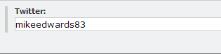

Glass.Mapper allows you to create you own data handlers to extend those supplied out of the box, this allows you to enhance Glass.Mapper to suit your solutions requirements.
In this tutorial we will create a custom data handler that maps a field in Sitecore to a set of Twitter tweets. Lets start by looking at the field in Sitecore:
This is just a simple Single Line Text field that allows the content editor to enter the Twitter username of the person they want tweets for.
The model we will use looks like this:
public class TwitterPage
{
public virtual Twitter Twitter { get; set; }
}
You can see that the Twitter property is of type Twitter. This Twitter type is what our data handler will create and looks like this:
public class Twitter
{
public Twitter(string username, IEnumerable<TweetSharp.TwitterStatus> tweets)
{
Username = username;
Tweets = tweets;
}
public string Username { get; set; }
public IEnumerable<TweetSharp.TwitterStatus> Tweets { get; private set; }
}
Quite a simple class, notice that the Tweets are of type TwitterStatus from the TweetSharp project, I will be using the TweetSharp project to communicate with Twitter.
Below shows all the code needed for the data handler:
public class TweetsDataHandler : Glass.Mapper.Sc.DataMappers.AbstractSitecoreFieldMapper
{
private const string ConsumerKey = "";
private const string ConsumerSecret = "";
private const string AccessToken = "";
private const string AccessSecret = "";
private const string CachePrefix = "95C2D29E-540E-43B6-B937-D29382039182";
public TweetsDataHandler()
: base(typeof (Twitter))
{
}
public override string SetFieldValue(object value, SitecoreFieldConfiguration config, SitecoreDataMappingContext context)
{
var twitter = value as Twitter;
return twitter == null ? string.Empty : twitter.Username;
}
public override object GetFieldValue(string fieldValue, SitecoreFieldConfiguration config, SitecoreDataMappingContext context)
{
if (string.IsNullOrWhiteSpace(fieldValue))
return null;
try
{
var cache = HttpContext.Current.Cache;
var cacheKey = CachePrefix + fieldValue;
Twitter twitter = null;
if (cache != null && cache[cacheKey] != null)
{
twitter = cache[cacheKey] as Twitter;
}
else
{
var service = new TweetSharp.TwitterService(ConsumerKey, ConsumerSecret);
service.AuthenticateWith(AccessToken, AccessSecret);
var options = new TweetSharp.ListTweetsOnUserTimelineOptions();
options.ScreenName = fieldValue;
options.Count = 5;
var result = service.ListTweetsOnUserTimeline(options);
twitter = new Twitter(fieldValue, result);
if (cache != null)
{
cache.Add(cacheKey, twitter, null, DateTime.Now.AddMinutes(10), Cache.NoSlidingExpiration,
CacheItemPriority.Low, null);
}
}
return twitter;
}
catch (Exception ex)
{
Sitecore.Diagnostics.Log.Error("Failed to get tweets", ex);
return null;
}
}
}
Firstly the handler inherits from the AbstractSitecoreFieldMapper class, you should use this class if you are mapping to and from a Sitecore field, otherwise use the AbstractDataMapper class if you want to map other item data.
public class TweetsDataHandler : Glass.Mapper.Sc.DataMappers.AbstractSitecoreFieldMapper
The AbstractSitecoreFieldMapper class takes a list of types that the data handler will handle, this is passed via the constructor:
public TweetsDataHandler()
: base(typeof (Twitter))
The SetFieldValue method is used to convert an object to a value that can be stored by site. You can see in our example that we just return the Username value on the Twitter class.
public override string SetFieldValue(object value, SitecoreFieldConfiguration config, SitecoreDataMappingContext context)
{
var twitter = value as Twitter;
return twitter == null ? string.Empty : twitter.Username;
}
The bulk of the work is performed by the GetFieldValue method which converts a Sitecore field value to a specific type. This code is relatively simple and includes some caching so we don't have to keep querying Twitter. The important part is to use the passed in field value from the fieldValue parameter.
You will notice two other parameters on the methods that we haven't need to use:
SitecoreFieldConfiguration config, SitecoreDataMappingContext context
The config parameter contains the configuration for the property being mapped. The configuration would be set either by using attribute configuration or fluent configuration.
The context parameter contains the information about the currently running Glass.Mapper/Sitecore context, via this you can access the Item being mapped, the ISitecoreService currently being used and the final object that will be returned.
Finally we need to register the data handler with the Castle Windsor container. Open the App_Start/GlassMapperScCustom class, this class is created automatically when you install Glass.Mapper.Sc.Windsor and update the CastleConfig method:
public static void CastleConfig(IWindsorContainer container){
var config = new Config();
container.Register(
Component.For < AbstractDataMapper>().ImplementedBy<TweetsDataHandler>().LifestyleCustom<NoTrackLifestyleManager>()
);
container.Install(new SitecoreInstaller(config));
}
Finally we just need to test this:
var context = new SitecoreContext();
var item = context.GetCurrentItem<TwitterPage>();
if (item.Twitter != null)
{
foreach (var tweet in item.Twitter.Tweets)
{
//do some work
}
}
That concludes this tutorial in which we have seen how you can extend Glass.Mapper to support mapping of your own custom data types.